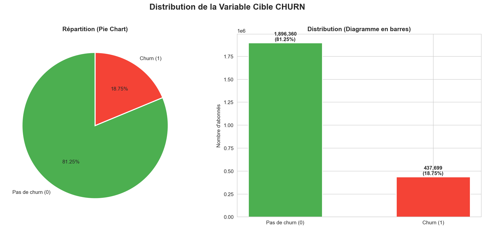
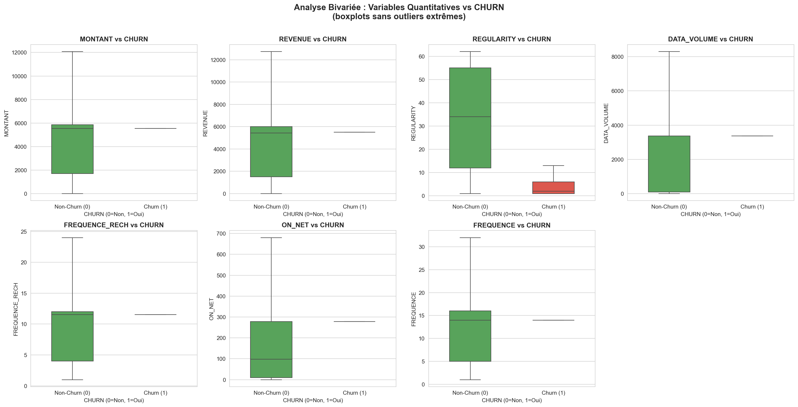
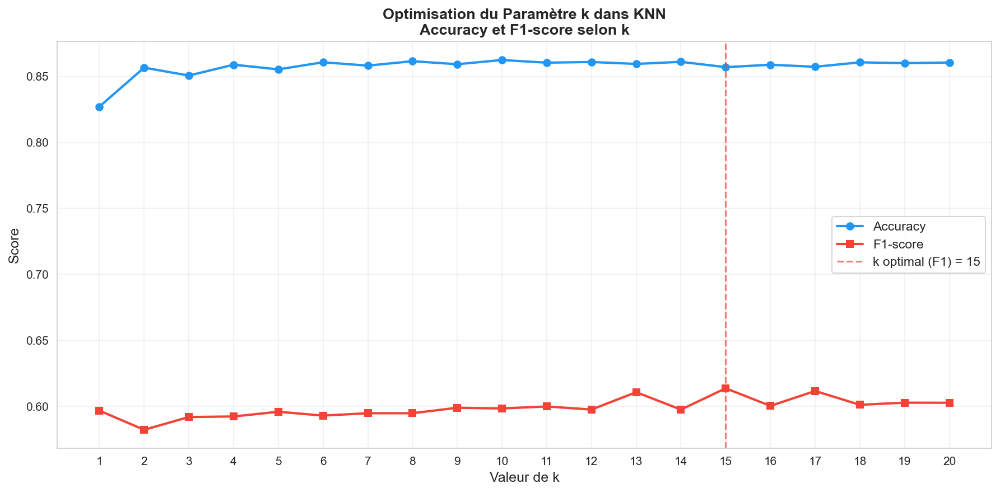
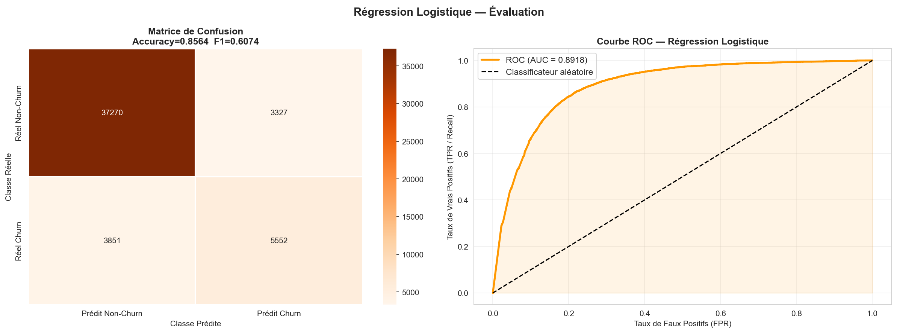
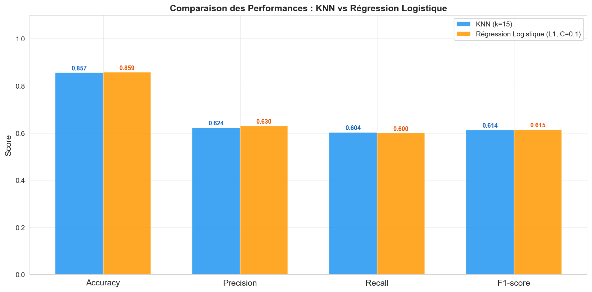

~/projets/prediction-churn
Repérer les clients sur le départ parmi 2,3 millions.
Problème
Un opérateur perd 18,75 % de ses clients. Il faut prédire qui va partir pour cibler les actions de rétention.
Ce que j'ai fait
Nettoyage de 2,3 M de lignes, analyse des variables, puis KNN et régression logistique optimisés et comparés.
Résultat
AUC 0,89avec la régression logistique (L1, C = 0,1), le modèle recommandé : plus interprétable et meilleur F1.
donnéesUn jeu volumineux et déséquilibré
Variables de consommation (montant, fréquence de recharge, revenu, volume data, régularité) et variables qualitatives (région, ancienneté). Les valeurs manquantes sont remplacées par la moyenne pour les variables quantitatives et par « Inconnu » pour les qualitatives.

explorationCe qui distingue les clients qui partent
- La régularité est la variable la plus discriminante : les clients qui partent utilisent le réseau moins régulièrement.
- Les fréquences d'usage et de recharge sont plus basses chez eux.
- Piège repéré : une régression linéaire sur REVENUE donne R² = 1, mais c'est un artefact, car ARPU_SEGMENT lui est corrélé à 0,9999. J'ai écarté ce résultat au lieu de le présenter comme une performance.

modèlesRéglage des deux classifieurs
Les classes étant déséquilibrées, un modèle qui prédit toujours « reste » aurait déjà 81 % d'accuracy. J'ai donc choisi les hyperparamètres sur le F1-score du churn, pas sur l'accuracy.


Réglage de la régression logistique en 3D : une colonne par configuration, hauteur = F1 du churn (axe à partir de 0,40). Survolez une colonne pour lire ses scores.
Régularisation testée avec C de 0,001 à 100, en L1 et L2. La meilleure configuration est L1 avec C = 0,1. La pénalité L1 met à zéro les variables redondantes, ce qui règle le problème de multicolinéarité.
résultatsComparaison finale sur le jeu de test
| Modèle | Accuracy | Précision | Rappel | F1 |
|---|---|---|---|---|
| KNN (k = 15) | 0,8570 | 0,6239 | 0,6038 | 0,6137 |
| Régression logistique (L1, C = 0,1) | 0,8586 | 0,6303 | 0,6002 | 0,6149 |

conclusion métierPourquoi la régression logistique
- Meilleur F1 et meilleure précision, avec une AUC de 0,89.
- Elle donne une probabilité de départ par client, utile pour prioriser les appels de rétention.
- Ses coefficients s'expliquent à une équipe métier, contrairement au KNN.
- Elle prédit 2,3 M de clients en quelques secondes, là où le KNN doit comparer chaque client à tout le jeu d'entraînement.
Limite : le rappel reste autour de 60 %, donc 4 départs sur 10 passent inaperçus. Prochaine étape : rééquilibrer les classes ou ajuster le seuil de décision selon le coût d'un client perdu.